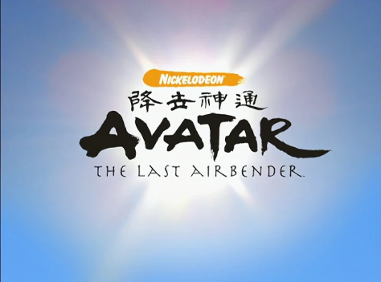
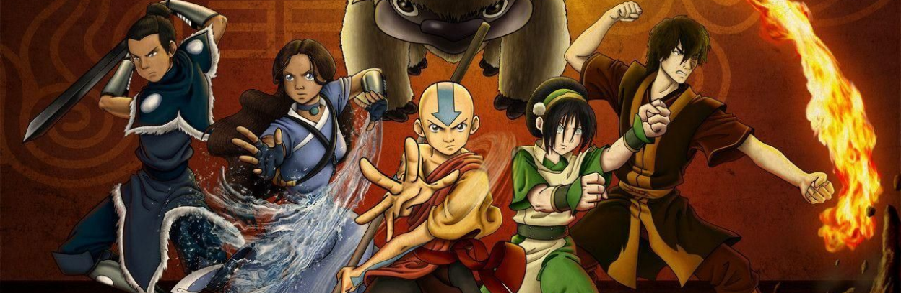

Аватар: Легенда об Аанге, оригинальное название Аватар: Последний маг воздуха - мультсериал, созданный американской компанией Nickelodeon. Действие мультсериала происходит в псевдо-азиатском мире боевых искусств, главной особенностью которого является наличие магии покорения стихий. Авторами мультсериала являются Майкл Данте ДиМартино и Брайан Кониецко.
В центре сюжета мультсериала приключения двенадцатилетнего мальчика Аанга. Он является Аватаром, единственным человеком, который может управлять всеми четырьмя стихиями и в чьих силах остановить Столетнюю войну, начатую Народом Огня.
Майкл и Брайан создали уникальный фантастический мир, в котором живут маги, необычные животные и загадочные духи. Люди разделены на четыре нации: Племя Воды, Царство Земли, Народ Огня и Воздушные кочевники. Представители каждой нации могут покорить только свой стихийный элемент, но магический дар проявляется не у всех.
Единственным человеком, который может управлять всеми стихиями, является Аватар. Когда Аватар умирает, его дух переселяется в мага из нации, следующей в цикле Аватара (вода – земля – огонь - воздух). На протяжении многих веков Аватар хранит равновесие в мире, выступает посредником между миром людей и миром Духов и решает сложные проблемы, затрагивающие все нации.
Термин "Аватар" происходит от санскритского слова Avatāra, что означает "воплощение". В индусской мифологии боги воплощаются в аватаров, чтобы восстановить баланс на земле в период большого зла. Китайские иероглифы, изображенные над картой, в переводе означают "божественный посланник, спустившийся в мир смертных".
Аватар обладает уникальной способностью входить в так называемое состояние Аватара. В этом состоянии его глаза начинают светиться, и он объединяет внутри себя мощь всех предыдущих воплощений Аватара. Главной слабостью Аватара является то, что, будучи максимально сильным в состоянии Аватара, он одновременно подвержен и самой главной опасности. Если Аватар будет убит в состоянии Аватара, то цикл перерождений прекратится.
Аватар: Легенда об Аанге
Мир сериала
Аватар
Магия стихий
Боевые искусства
Сюжет
Книга 1: Вода
Книга 2: Земля
Книга 3: Огонь

Нации
Магия
Заставка сериала.
Иероглифы означают "Божественный посланник спустившийся в мир смертных".
Карта мира Аватара.
Аватары показанные в мультсериале.
Реликвии Аватара.
Четыре стихии сериала.
Аанг и Аппа, замороженные в состоянии аватара
Когда Аанг был маленьким ребенком, он показал, что он Аватар, выбрав четыре игрушки (реликвии аватара) из тысячи других. Реликвии Аватара - это четыре небольшие игрушки, которые используют для вычисления Аватара ещё в юном возрасте. Эти четыре вещи представляют четыре стихии: черепаший панцирь (Вода), пропеллер на нитке (Воздух), свинобезьяна (Земля) и барабан (Огонь). Только эти игрушки и только все четыре, если их выбирают, указывают на будущего Аватара. Этот тест максимально прост и даже нравится детям.
Магия мира Аватара состоит в покорении четырёх стихий, классических для большинства древних философий, но, что интересно, не для китайской философии, где таких стихий было пять. Этими стихиями являются вода, земля, огонь и воздух.
Ещё одним элементом, без которого невозможно представить себе сериал, стали восточные боевые искусства, на которых основаны магические пассы. Любой маг должен усердно трудится, что бы овладеть своей магией и совершенствоваться в ней. У каждой магии множество стилей и приемов. Все стили боев в сериале базируются на Китайских боевых искусствах. Основа каждой магии это реальный боевой стиль. В основе магии воздуха лежит стиль Ба Гуа, магии земли – Хун Гар, магии воды – Тай Цзи, магии огня - Северное Шаолиньское Кунг-Фу. В штате сотрудников есть консультант по боевым искусствам – Сифу Кису.
Понимая, что Народ Огня скоро начнёт войну против других наций, монахи-Воздушные кочевники рассказывают двенадцатилетнему Аангу, что он является новым воплощением Аватара. Это знание тяготит мальчика, а когда он узнаёт о том, что для дальнейшего обучения должен покинуть своего любимого наставника Гияцо и своих друзей, то сбегает из Храма на своём летающем зубре. Над океаном они попадают в шторм и оказываются под водой, где Аанг входит в состояние Аватара и замораживает себя и Аппу.
Спустя сто лет Аанга находят Катара и Сокка из Южного Племени Воды. От них Аанг узнаёт о войне с Народом Огня и смерти всех Воздушных кочевников. Таким образом, он оказывается последним магом воздуха и единственным, кто может восстановить равновесие в мире. Вместе со своими новыми друзьями Аанг отправляется на Северный полюс, где сможет обучиться магии воды. Это оказывается непростой задачей, так как его по пятам преследует изгнанный принц Зуко, который должен поймать Аватара, чтобы вернуть себе честь.
Следующей стихией, которую должен изучить Аанг, является земля. На поиски учителя друзья отправляются в царство Земли. Там они встречают слепую девочку по имени Тоф, которая соглашается учить Аанга. Друзья узнают о солнечном затмении, во время которого маги огня лишаются своих сил, и решают использовать это преимущество для вторжения в страну Огня. Это, а также поиски похищенного Аппы, приводят их в столицу царства Земли, город Ба Синг Се, где они узнают, что Царь Земли - всего лишь марионетка в руках главного советника Лонг Фенга. Тем временем Хозяин Огня Озай поручает своей дочери Азуле схватить Аватара, и та берётся за это с удвоенной энергией.
Пока взрослые друзья Аанга готовят вторжение в столицу страны Огня, сам Аанг вместе с Катарой, Соккой и Тоф отправляются в путешествие по стране Огня. Здесь их ждёт несколько открытий, и они узнают, что люди Огня вовсе не такие злые, как им казалось. День прибытия кометы Созина всё ближе, и Аанг решает довериться давнему противнику - принцу Зуко, который отказался от своего отца и решил обучить Аватара магии огня, чтобы закончить войну.
Вернуться к началу страницы